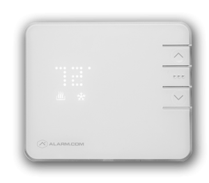

Remote thermostat control
Adjust heating and cooling from your smartphone, tablet, or laptop before you arrive home.

System 04 / energy management
Manage temperature, lighting, and energy from anywhere with a connected system built around your home.
The efficiency layer
A home energy management system gives you a clearer view of what your household uses and the control to make comfort more efficient.
Adjust heating and cooling from your smartphone, tablet, or laptop before you arrive home.
Turn lights on or off remotely and use location-based rules to avoid waste.
Pre-set temperature routines that fit your household and your daily schedule.
Use the Alarm.com app to bring home automation and energy decisions together.
Small changes, visible impact
Choose the temperatures, lighting scenes, and routines that match the way your household moves.
Use the Alarm.com app to make an adjustment from the couch, the office, or the road.
Automated rules keep comfort consistent while helping reduce unnecessary energy use.
Residential energy management in Minneapolis, MN

Home energy management systems in Minneapolis have become a must-have if you’re under a tight household budget. With rising electricity costs your bills will go up because of heating, cooling and lighting.
We make it easy to access your house from your smart phone. Control your AC, heating and electricity by the Alarm.com app with your smartphone, tablet or laptop. Stay in charge of your energy usage easily and remotely with a house energy management system from Lloyd Security.
Your home’s temperature can be scheduled and pre-set to give you maximum comfort. You can have your heating and cooling running all day, but think about how much electricity is being used when you’re not home. With cellular monitoring technology you can remotely control your house’s heating and cooling with the smartphone app from Alarm.com.
With a home automation system from Lloyd Security, your home automation system will allow you to:
When you’re not home, leaving lights on is a major waste of money and electricity. With the Alarm.com app you can control all of the lighting in your house at any time. If you’re out late, you can have your lights turn on once you get within a certain radius of your house thanks to the Geo-Services offered from Lloyd Security.
Energy management is easy when you combine your house with our home automation system. Once your Lloyd Security system is installed, all you need to do for maximum savings is to set all of your preferences and let the system do the rest for you. You’ll start seeing your energy consumption drop and see the savings in your bank account.
Call Lloyd Security today for a free consultation or fill out the form on the home page and we will contact you!
Ready for a more efficient home?
Call Lloyd Security for a free consultation about home energy management systems and saving money on energy.
Start a conversation